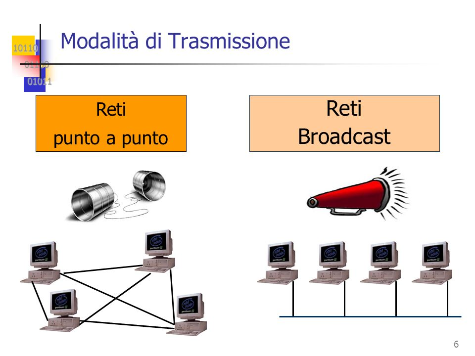
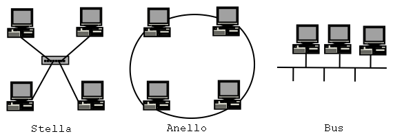
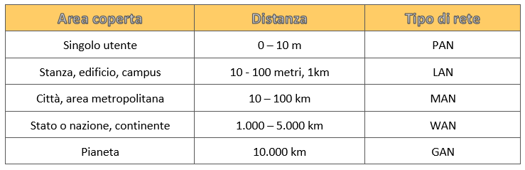
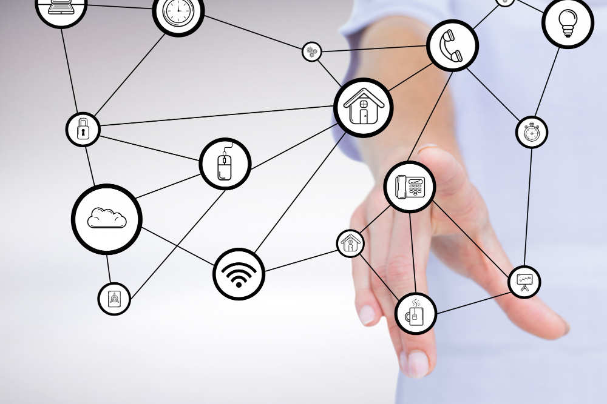

Lezione 1
Introduzione al networking
Le reti informatiche sono sistemi complessi che permettono la comunicazione e la condivisione di dati tra dispositivi come computer, server, e altri dispositivi elettronici. Queste reti possono essere classificate in base alla loro estensione, alla tecnologia di trasmissione utilizzata e alla modalità di gestione del traffico. Le reti informatiche consentono di scambiare informazioni in tempo reale, supportano applicazioni come la navigazione su internet, il cloud computing e la comunicazione tramite e-mail.

Reti a punto e reti broadcast
Le reti punto a punto (peer-to-peer) e broadcast sono due tipologie fondamentali di comunicazione nelle reti informatiche. Nelle reti punto a punto, ogni dispositivo agisce come un nodo autonomo, inviando e ricevendo dati da altri dispositivi senza la necessità di un server centrale. Questa architettura è utilizzata in applicazioni come il file sharing (ad esempio, BitTorrent), dove ogni nodo è sia un client che un server. Al contrario, le reti broadcast sono caratterizzate dalla trasmissione di un messaggio da una sorgente a tutti i dispositivi nella rete, come nel caso delle reti televisive o radiofoniche. In una rete broadcast, un solo invio di dati può essere ricevuto da tutti i nodi della rete, il che rende questa architettura efficiente per applicazioni come la diffusione di informazioni a livello di rete locale o globale.

Topologie di rete principali

Topologia a stella: In questa configurazione, tutti i dispositivi sono collegati a un nodo centrale, chiamato switch o hub. La comunicazione avviene tramite questo nodo centrale, che gestisce i dati tra i dispositivi.
Topologia ad anello: In un anello, ogni dispositivo è collegato al successivo formando un ciclo. I dati viaggiano in un solo senso (o in entrambi, a seconda della variante) attorno all'anello fino a raggiungere la destinazione.
Topologia a bus: Tutti i dispositivi sono collegati a un unico cavo principale (chiamato "bus"). I dati viaggiano lungo il bus e vengono ricevuti da tutti i dispositivi, ma solo quello con l'indirizzo corretto li processa.
Reti in ordine di grandezza

Lezione 2
Il trasferimento dell'informazione
Cos'è un protocollo?
Un protocollo è un insieme di regole e convenzioni che definiscono come i dispositivi in una rete devono comunicare tra loro. Queste regole specificano come i dati devono essere formattati, trasmessi, ricevuti e gestiti, garantendo che tutte le parti coinvolte possano "capirsi" e scambiarsi informazioni in modo efficace e sicuro.
Gli elementi di comunicazione che seguono i protocolli possono essere quelli di connessione, trasferimento dati o commutazione.
Ogni elemento può far parte della categoria server(S) o client(C).

Packet switching
Packet switching (commutazione a pacchetto) è una tecnica utilizzata nelle reti di telecomunicazioni, come Internet, per trasmettere i dati in forma di pacchetti. In questo sistema, i dati vengono suddivisi in piccole porzioni chiamate pacchetti, che vengono inviati attraverso la rete in modo indipendente l'uno dall'altro. Ogni pacchetto può seguire un percorso diverso per arrivare alla destinazione, dove i pacchetti vengono poi riassemblati nell'ordine corretto.

Ritorna alla home